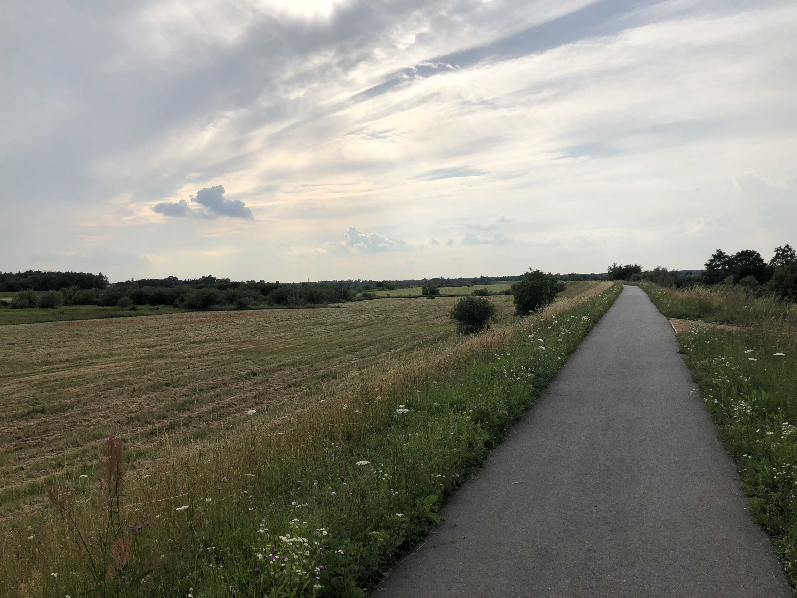
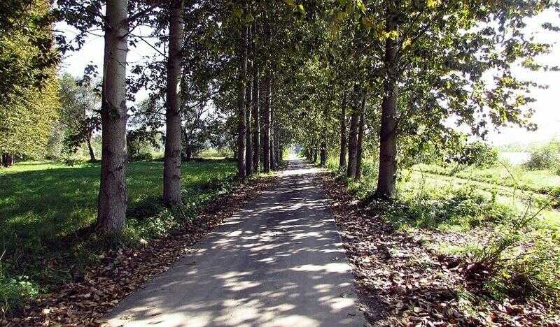
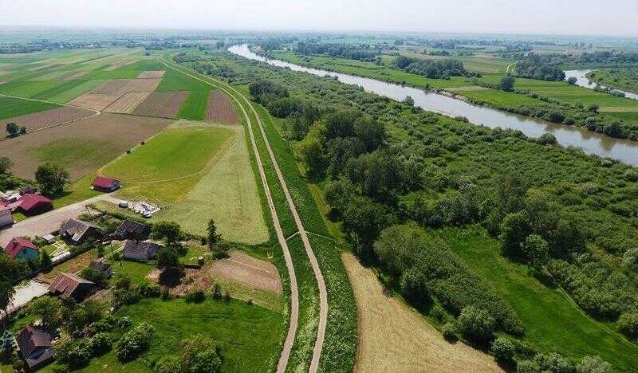
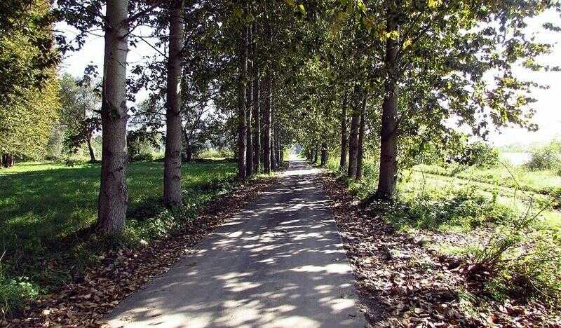
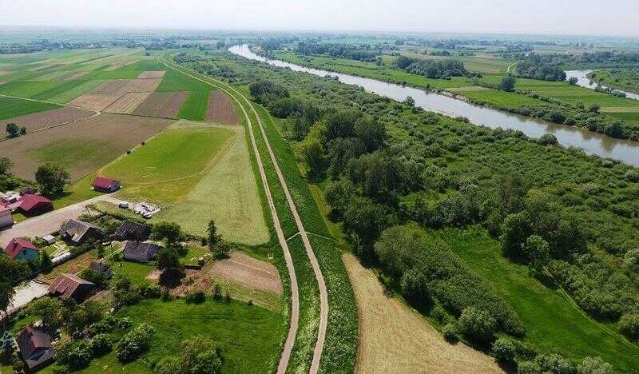
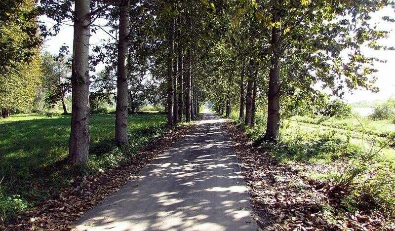
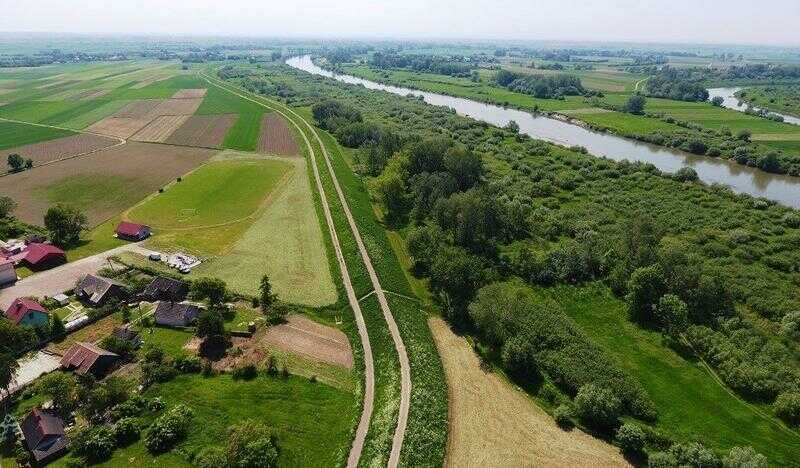

Wiślana Trasa Rowerowa
To trasa, która w założeniu ma przebiegać przez całą Polskę wzdłuż Wisły. W Małopolsce aktualnie wykonana jest wiekszość trasy, poza małymi odcinkami, które są w budowie. Nawierzchnia w większości jest asfaltowa, więc każdym rowerem się da przejechać.
Pobierz GPX

 




